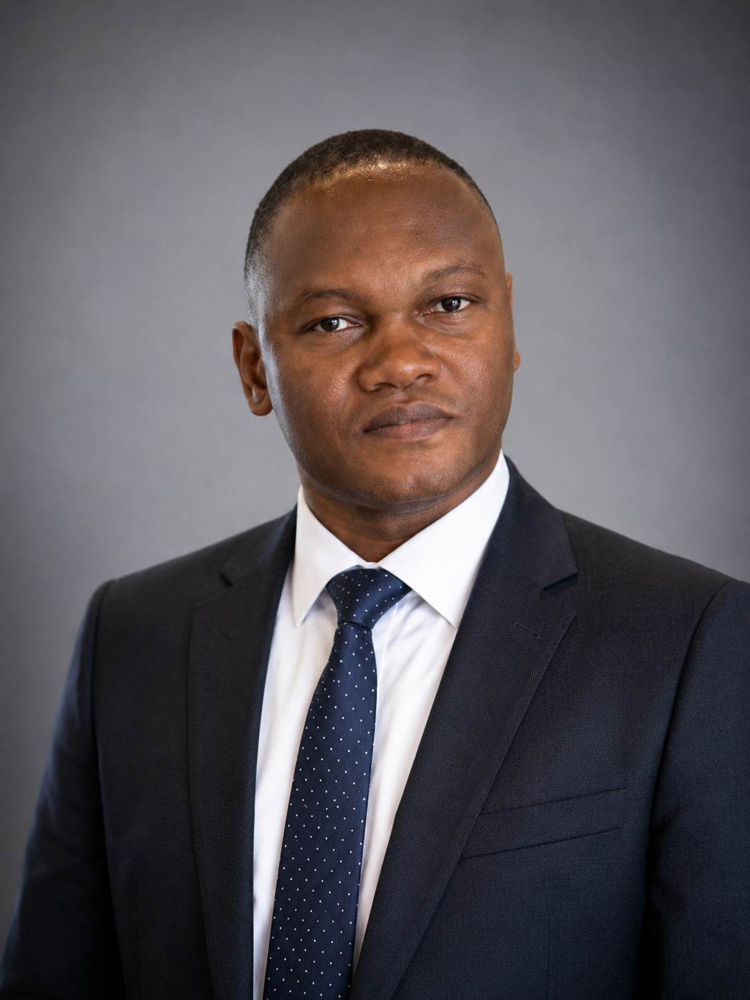

About À propos
About the Chaire La Chaire
Established on November 8, 1999, the UNESCO Chair on Renewable Energies at Université de Lomé (CUER-UL) promotes an integrated system of research, teaching, and training in renewable energies, together with community engagement and outreach. It fosters collaboration between the faculty and researchers of Université de Lomé and their colleagues around the world.
Créée le 08 novembre 1999, la Chaire UNESCO sur les Énergies Renouvelables de l'Université de Lomé (CUER-UL) a pour objectif de promouvoir un système intégré de recherche, d'enseignement et de formation dans le domaine des énergies renouvelables, ainsi que l'engagement de la collectivité et l'action en matière de communication. Elle facilite la collaboration entre les enseignants-chercheurs de l'Université de Lomé et leurs collègues à travers le monde.
Drawing on solid experience in promoting renewable energies, through the training and dissemination of efficient cooking technologies (improved cookstoves), the installation of solar generators in schools for hands-on training, the training of artisans in solar water heater manufacturing, and the training of master's students in the maintenance of photovoltaic installations, CUER-UL has the qualified, skilled personnel to understand and implement any solar photovoltaic project. Bringing together faculty and researchers from the Department of Physics, the École Polytechnique de Lomé, and the Solar Energy Laboratory, the Chaire draws on broad and diverse expertise, currently coordinated by its Chair, Prof. Yendoubé Lare.
Dotée d'une solide expérience dans la promotion des énergies renouvelables, à travers divers projets comme la formation et la diffusion de technologies efficaces de cuisson (foyers améliorés), l'installation de générateurs solaires dans des écoles pour des travaux pratiques, la formation d'artisans à la fabrication de chauffe-eau solaires et la formation des étudiants de master à la maintenance des installations photovoltaïques, la CUER-UL dispose de ressources humaines qualifiées et compétentes pour la compréhension et l'implémentation de tout projet solaire photovoltaïque. Réunissant des enseignants-chercheurs du Département de Physique, de l'École Polytechnique de Lomé et du Laboratoire sur l'Énergie Solaire, la Chaire bénéficie de compétences diverses et variées, dont la coordination est aujourd'hui assurée par son titulaire, le Professeur Yendoubé Lare.
Chairs of the CUER-UL Titulaires de la Chaire
Since its creation, the Chaire has been led by three professors of the Department of Physics. Select a profile to read more. Depuis sa création, la Chaire a été dirigée par trois professeurs du Département de Physique. Cliquez sur un profil pour en savoir plus.
 Prof. Léopold Messan Gnininvi
Founding Chair
Titulaire fondateur
View profile
Voir le profil
Prof. Léopold Messan Gnininvi
Founding Chair
Titulaire fondateur
View profile
Voir le profil
Prof. Léopold Messan Gnininvi founded the Solar Energy Laboratory (LES) at Université de Lomé in 1978 and directed it from 1978 to 1994. He was the founding Chair of the UNESCO Chair on Renewable Energies (CUER-UL), established in 1999. A fuller biography will be added soon.
Le Professeur Léopold Messan Gnininvi a fondé le Laboratoire sur l'Énergie Solaire (LES) de l'Université de Lomé en 1978 et l'a dirigé de 1978 à 1994. Il fut le titulaire fondateur de la Chaire UNESCO sur les Énergies Renouvelables (CUER-UL), créée en 1999. Une notice biographique plus complète sera ajoutée prochainement.
Prof. Kossi Napo
Former Chair
Ancien titulaire
View profile
Voir le profil
Prof. Kossi Napo directed the Solar Energy Laboratory (LES) at Université de Lomé from 1994 to 2020 and served as Chair of the UNESCO Chair on Renewable Energies. A fuller biography will be added soon.
Le Professeur Kossi Napo a dirigé le Laboratoire sur l'Énergie Solaire (LES) de l'Université de Lomé de 1994 à 2020 et a été titulaire de la Chaire UNESCO sur les Énergies Renouvelables. Une notice biographique plus complète sera ajoutée prochainement.

Prof. Yendoubé Lare, Ph.D.
Current Chair, since 2023
Titulaire actuel, depuis 2023
View profile
Voir le profil
Email Google Scholar ResearchGate
Education Formation
- Postdoctoral Researcher, organic solar materials, University of Nantes, France, 2009 to 2010.
- Chercheur Postdoctoral, matériaux solaires organiques, Université de Nantes, France, 2009 à 2010.
- Ph.D. in Physics, thin films and optoelectronics, Université de Lomé, 2009.
- Doctorat en Physique, couches minces et optoélectronique, Université de Lomé, 2009.
- M.Sc. in Physics, materials and energies, Université de Lomé, 2006.
- Master en Physique, matériaux et énergies, Université de Lomé, 2006.
- B.Sc. in Physics, industrial physics and energetics systems, Université de Lomé, 2004.
- Licence en Physique, physique industrielle et systèmes énergétiques, Université de Lomé, 2004.
Research Interests Intérêts de Recherche
- Nanoelectronics, nanophotonics, optoelectronics, photonics
- Nanoélectronique, nanophotonique, optoélectronique, photonique
- Fabrication and characterization of thin film materials for photovoltaic applications
- Fabrication et caractérisation de matériaux en couches minces pour applications photovoltaïques
- Smart grids and renewable energy systems for sub Saharan contexts
- Réseaux intelligents et systèmes d'énergie renouvelable pour le contexte subsaharien
- Energy infrastructure security, energy storage, and sustainability
- Sécurité des infrastructures énergétiques, stockage d'énergie et durabilité
- Artificial intelligence for energy, smart cities and IoT
- Intelligence artificielle pour l'énergie, villes intelligentes et IoT
Biosketch Notice Biographique
Yendoubé Lare is Full Professor of Physics in the Department of Physics at Université de Lomé, where he holds the UNESCO Chair on Renewable Energies and chairs the Master's Program in Materials. He received his B.Sc. in Physics with a specialization in Industrial Physics and Energetics Systems from Université de Lomé in 2004, his M.Sc. in Physics (Materials and Energies) from the same institution in 2006, and his Ph.D. in Physics (Thin Films and Optoelectronics) in 2009. He completed a postdoctoral fellowship at the University of Nantes (France) from 2009 to 2010, working on organic solar materials.
Prof. Lare joined Université de Lomé in 2011 as Assistant Professor, was promoted to Associate Professor in 2016, and to Full Professor in 2022. Since 2010 he has served as Project Manager of the Solar Energy Laboratory. He held visiting research positions at the Institute of Applied Physics, TU Dresden (Germany) in 2014 and at the Indian Institute of Technology, Calicut in 2013, supported by DAAD, TWAS-DFG, and CV Raman fellowships. He is Secretary-General of the Togolese Physics Society and Vice Chair of the University Services Centre at Université de Lomé. In 2007, he founded the SOS Energy Togo Association.
His research focuses on the fabrication and characterization of thin film materials for photovoltaic applications, the design of smart grids adapted to sub Saharan contexts, and the optimization of locally manufactured energy equipment. His work spans the fundamental physics of materials through to large scale energy systems, with a consistent emphasis on locally relevant solutions for energy access and sustainability across West Africa. He has supervised more than 30 master's and doctoral students and has authored or co authored more than 40 publications in international journals.
Beyond academia, Prof. Lare has served as energy consultant on numerous public sector and international development projects, including renewable energy feasibility studies for the German Ministry of Education and Research (via WASCAL), the evaluation of the GIZ funded PROENERGIE program in Togo, the development of Togo's National Renewable Energy Action Plans (PANER, PANEE, SE4ALL), and ongoing technical support for the Togolese Ministry of Mines and Energy. He has also led training programs for stove technicians across Togo and Burkina Faso under partnerships with SNV, the Toyola Energy network, and the Carbon Finance ecosystem.
Yendoubé Lare est Professeur Titulaire de Physique au Département de Physique de l'Université de Lomé, où il est titulaire de la Chaire UNESCO sur les Énergies Renouvelables et responsable du Master "Matériaux". Il a obtenu sa Licence en Physique (option Physique Industrielle et Systèmes Énergétiques) à l'Université de Lomé en 2004, son Master en Physique (Matériaux et Énergies) dans la même institution en 2006, et son Doctorat en Physique (Couches Minces et Optoélectronique) en 2009. Il a effectué un séjour postdoctoral à l'Université de Nantes (France) de 2009 à 2010, sur les matériaux solaires organiques.
Le Prof. Lare a rejoint l'Université de Lomé en 2011 comme Maître Assistant, a été promu Maître de Conférences en 2016, puis Professeur Titulaire en 2022. Depuis 2010, il dirige le Laboratoire de l'Énergie Solaire. Il a effectué des séjours de recherche invités à l'Institute of Applied Physics de TU Dresden (Allemagne) en 2014 et à l'Indian Institute of Technology, Calicut en 2013, avec le soutien des bourses DAAD, TWAS-DFG, et CV Raman. Il est Secrétaire Général de la Société Togolaise de Physique et Vice Président du Centre des Services Universitaires de l'Université de Lomé. En 2007, il a fondé l'association SOS Énergie Togo.
Sa recherche porte sur la fabrication et la caractérisation de matériaux en couches minces pour applications photovoltaïques, la conception de réseaux intelligents adaptés au contexte subsaharien, et l'optimisation d'équipements énergétiques produits localement. Ses travaux couvrent la physique fondamentale des matériaux jusqu'aux systèmes énergétiques à grande échelle, avec un accent constant sur les solutions adaptées au contexte local pour l'accès à l'énergie et la durabilité en Afrique de l'Ouest. Il a encadré plus de 30 étudiants en master et doctorat, et a coauteur plus de 40 publications dans des revues internationales.
Au delà du milieu académique, le Prof. Lare a été consultant énergie sur de nombreux projets de développement international et du secteur public, notamment des études de faisabilité d'énergies renouvelables pour le Ministère Allemand de l'Éducation et de la Recherche (via WASCAL), l'évaluation du programme PROENERGIE financé par la GIZ au Togo, l'élaboration des plans d'action nationaux du Togo (PANER, PANEE, SE4ALL), et un appui technique régulier au Ministère togolais des Mines et de l'Énergie. Il a également dirigé des programmes de formation pour techniciens de cuisson au Togo et au Burkina Faso, dans le cadre de partenariats avec SNV, le réseau Toyola Energy et l'écosystème Carbon Finance.
Professional History Parcours Professionnel
- Since 2023, Chair, UNESCO Chair on Renewable Energies, Université de Lomé.
- Depuis 2023, Titulaire de la Chaire UNESCO sur les Énergies Renouvelables, Université de Lomé.
- Since 2022, Full Professor of Physics, Université de Lomé.
- Depuis 2022, Professeur Titulaire de Physique, Université de Lomé.
- Since 2021, Chair, Master's Program in Materials, Université de Lomé.
- Depuis 2021, Responsable du Master "Matériaux", Université de Lomé.
- Since 2017, Secretary General, Togolese Physics Society. Vice Chair, University Services Centre, Université de Lomé.
- Depuis 2017, Secrétaire Général, Société Togolaise de Physique. Vice Président, Centre des Services Universitaires, Université de Lomé.
- 2016 to 2022, Associate Professor of Physics, Université de Lomé.
- 2016 à 2022, Maître de Conférences en Physique, Université de Lomé.
- 2011 to 2016, Assistant Professor of Physics, Université de Lomé.
- 2011 à 2016, Maître Assistant en Physique, Université de Lomé.
- Since 2010, Project Manager, Solar Energy Laboratory, Université de Lomé.
- Depuis 2010, Responsable de Projet, Laboratoire de l'Énergie Solaire, Université de Lomé.
- 2007, Founder, SOS Energy Togo Association.
- 2007, Fondateur, Association SOS Énergie Togo.
Visiting Researcher Chercheur Invité
- 2014, Institute of Applied Physics, TU Dresden, Germany. Four months, supported by DAAD and TWAS-DFG.
- 2014, Institute of Applied Physics, TU Dresden, Allemagne. Quatre mois, avec le soutien de DAAD et TWAS-DFG.
- 2013, Indian Institute of Technology, Calicut, India. Three months, CV Raman Fellowship.
- 2013, Indian Institute of Technology, Calicut, Inde. Trois mois, bourse CV Raman.
Courtesy and Adjunct Appointments Affiliations Secondaires et Conjointes
- Since 2020, Ecole Polytechnique de Lomé, Université de Lomé.
- Depuis 2020, École Polytechnique de Lomé, Université de Lomé.
- Since 2019, Centre d'Excellence Régional pour la Maîtrise de l'Électricité (CERME), Université de Lomé.
- Depuis 2019, Centre d'Excellence Régional pour la Maîtrise de l'Électricité (CERME), Université de Lomé.
- Since 2016, Department of Physics, Université de Kara.
- Depuis 2016, Département de Physique, Université de Kara.
- Since 2014, West African Science Service Center on Climate Change and Adapted Land Use (WASCAL).
- Depuis 2014, West African Science Service Center on Climate Change and Adapted Land Use (WASCAL).
- Since 2012, School of Computer Science (CIC), Université de Lomé.
- Depuis 2012, École des Sciences Informatiques (CIC), Université de Lomé.
- Since 2010, School of Medicine and ESTBA, Université de Lomé.
- Depuis 2010, Faculté de Médecine et ESTBA, Université de Lomé.
Honors, Awards, and Fellowships Distinctions, Prix et Bourses
- 2014, TWAS-DFG Cooperation Visit, Institute of Applied Physics, TU Dresden, Germany.
- 2014, Bourse de coopération TWAS-DFG, Institute of Applied Physics, TU Dresden, Allemagne.
- 2014, DAAD Cooperation Visit, Institute of Applied Physics, TU Dresden, Germany.
- 2014, Bourse de coopération DAAD, Institute of Applied Physics, TU Dresden, Allemagne.
- 2013, CV Raman Fellowship, Indian Institute of Technology, Calicut.
- 2013, Bourse CV Raman, Indian Institute of Technology, Calicut.
- 2009 to 2010, French Cooperation Postdoctoral Grant, University of Nantes, France.
- 2009 à 2010, Bourse de Coopération Française postdoctorale, Université de Nantes, France.
- 2009, French Cooperation Doctoral Grant, University of Nantes, France.
- 2009, Bourse de Coopération Française doctorale, Université de Nantes, France.
- 2004, Prize for Best Student in Physics, Université de Lomé.
- 2004, Prix du Meilleur Étudiant en Physique, Université de Lomé.
Selected Public Service and Consulting Service Public et Consultations Sélectionnés
- Since 2009, Local Stoves Characterization, Togo. Energy Component Consultant. Sponsors include E+Carbon, Ecosur Afrique, Entrepreneur du Monde, Toyola Energy, and others.
- Depuis 2009, Caractérisation des foyers améliorés locaux, Togo. Consultant composante énergie. Bailleurs, E+Carbon, Ecosur Afrique, Entrepreneur du Monde, Toyola Energy et d'autres.
- 2023, Action Plan for Access to Sustainable Energy and Climate (PAAEDC), Lakes 1 Municipality, Togo. Sponsor, European Union, via TMSU International.
- 2023, Plan d'Action pour l'Accès à l'Énergie Durable et le Climat (PAAEDC), Commune Lacs 1, Togo. Bailleur, Union Européenne, via TMSU International.
- 2023, PRESED-CI, Renovated Partnership for Research, Ivory Coast. Energy component lead. Sponsors, French Republic, IRD, State of Ivory Coast.
- 2023, PRESED-CI, Projet Rénové de Partenariat pour la Recherche, Côte d'Ivoire. Responsable de la composante énergie. Bailleurs, République Française, IRD, État de Côte d'Ivoire.
- 2022, Solar Sizing Study, Tchaoudjo Communes, Togo. Sponsor, Expertise France.
- 2022, Étude de dimensionnement solaire, Communes de Tchaoudjo, Togo. Bailleur, Expertise France.
- 2021, PROENERGIE Phase 1 Evaluation, Togo. Sponsor, GIZ, Germany.
- 2021, Évaluation de la Phase 1 du PROENERGIE, Togo. Bailleur, GIZ, Allemagne.
- 2019, Renewable Energy Feasibility Study, Togo. Sponsor, WASCAL Togo, commissioned by the German Ministry of Education and Research.
- 2019, Étude de faisabilité des énergies renouvelables, Togo. Bailleur, WASCAL Togo, commande du Ministère Allemand de l'Éducation et de la Recherche.
- 2019, Regional Solar Academies, CIZO Project, Togo. Sponsor, AT2ER Togo.
- 2019, Académies Solaires Régionales, Projet CIZO, Togo. Bailleur, AT2ER Togo.
- 2017, Review of Togo's National Energy Policy. Lead for Renewable Energy component. Sponsor, Ministry of Mines and Energy of Togo.
- 2017, Révision de la politique énergétique nationale du Togo. Responsable de la composante Énergies Renouvelables. Bailleur, Ministère des Mines et de l'Énergie du Togo.
- 2015, Stove Testing and Technician Training, Burkina Faso. Sponsor, SNV, Netherlands.
- 2015, Tests de foyers et formation de techniciens, Burkina Faso. Bailleur, SNV, Pays-Bas.
- 2013 to 2015, National Action Plans, PANER, PANEE, SE4ALL, Togo. Sponsor, Ministry of Mines and Energy of Togo.
- 2013 à 2015, Plans d'action nationaux, PANER, PANEE, SE4ALL, Togo. Bailleur, Ministère des Mines et de l'Énergie du Togo.
- 2008 to 2010, UEMOA Regional Biomass Energy Program, Togo. Capacity building for stove manufacturers. Sponsor, Ministry of Mines and Energy of Togo.
- 2008 à 2010, Programme Régional Biomasse-Énergie de l'UEMOA, Togo. Renforcement des capacités des fabricants de foyers. Bailleur, Ministère des Mines et de l'Énergie du Togo.